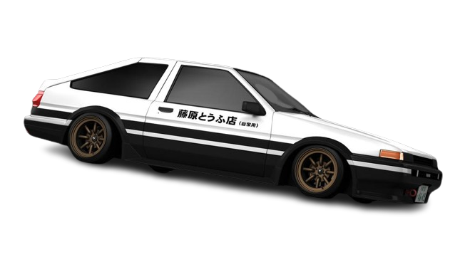

BRAND: TOYOTA
MODEL: TRUENO AE86
YEAR: '83-'87
Description: The AE86 series of the Toyota Corolla Levin and Toyota Sprinter Trueno are small, front-engine/rear-wheel drive models within the fifth generation Corolla range — marketed by Toyota from 1983 to 1987 in coupe and hatchback configurations. They were the last Corollas to offer rear-wheel drive.
.png) Car Stats
Car Stats